Applications & Advanced Topic of Tool Chains
Glance of Game Production
育碧的游戏制作过程

游戏引擎工具链的一大挑战是需要适应不同题材(genres)（比如 RPG, FPS 等）游戏的制作，因为制作不同类型游戏所需的编辑操作、游戏玩法等等会是截然不同的。

另外一些挑战在前一讲中介绍过，包括：
- 来自 DCC 和引擎工具的大量不同的数据
- 艺术家、设计师和程序员的思维方式不同
- 对于高质量制作而言，WYSIWYG 是不可或缺的

Architecture of World Editor
下面将详细讲解工具链中一个重要的工具——世界编辑器(world editor)。它的界面通常长这样（下图是旧版 UE 的关卡编辑器）：
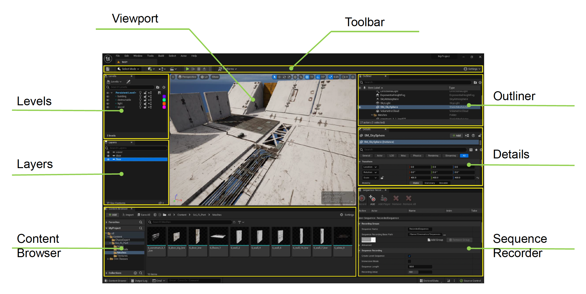
Viewport
其中一个重要部件是编辑器视口(viewport)。

- 它是设计师和游戏世界交互的主要窗口
- 由完整的游戏引擎在特殊的编辑器模式下驱动
- 提供多种用于编辑的特殊小工具(gadgets)和可视化工具(visualizers)
注意
编辑专用的代码必须从发布版游戏代码中移除！（这些代码极有可能成为编写外挂代码的入口）
Editable Objects
正如头几讲说明的，游戏中的所有对象都是可编辑的。因此编辑器世界中所有对象的编辑要求大致相同，例如移动、调整参数等。
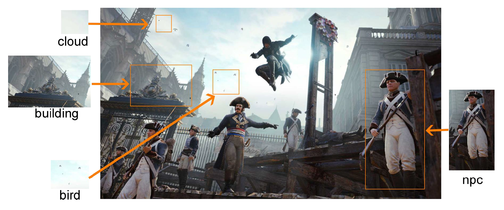
编辑器应当能显示场景中所有对象的信息。但对于一个大型游戏而言，场景中可能有成千上万的对象，因此以不同视图组织对象这件事就很重要，会为开发带来更多便利，比如提供树状视图、目录和分组等等。

有了视图列表后，接下来很自然地我们希望能看到有关选中对象的详细信息。编辑器通常会提供模式驱动的对象属性编辑功能（回顾上一讲介绍的模式）。

除模式外，我们也可以为不同类型自定义编辑工具。
Content Browser
编辑器中另一个重要部件是内容浏览器(content browser)。
- 提供所有资产的直观缩略图(thumbnails)
- 可以在不同项目间共享资产
- 其作用从静态文件文件夹演变为对内容海洋(ocean)的资产管理
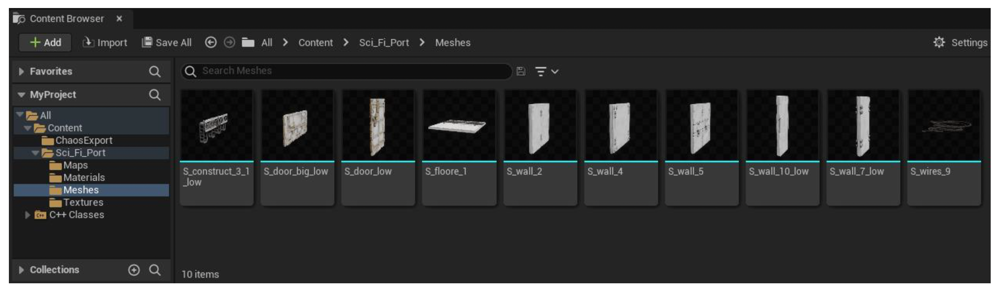
Editing Utilities in World Editor
除了上述内容外，世界编辑器还提供了各种编辑小工具，包括：

-
鼠标选取
-
光线投射(ray casting)
- 优点：
- 无需缓存
- 可支持在选定光线上的多个对象
- 缺点：查询效率低
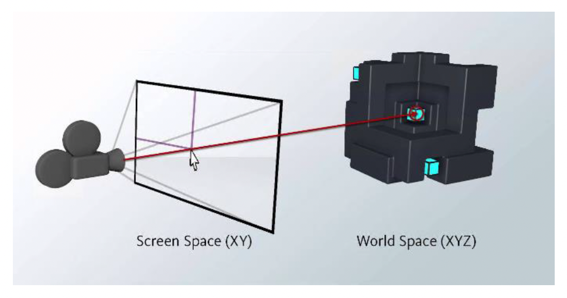
- 优点：
-
RTT
- 优点：
- 易于实现范围查询
- 查询效率高
- 缺点：
- 需要绘制额外的图
- 无法选中被遮挡的物体

- 优点：
-
-
对象变换(transform)编辑（包括平移、旋转、缩放操作）
例子

地形(terrain)
- 地形(landform)：高度图
- 外观：纹理图
- 植被(vegetation)
- 树木实例
- 装饰物分布图(decorator distribution map)
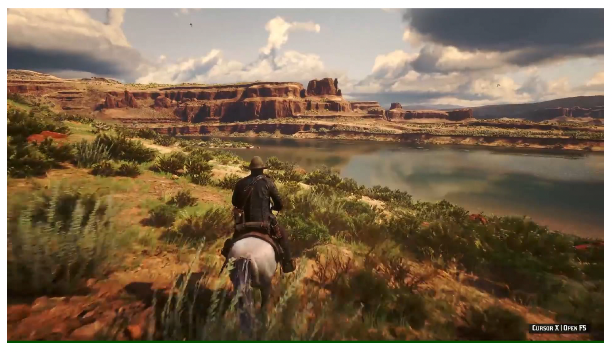
-
高度刷(height brush)
- 绘制高度图以调整地形网格
- 高度改变需要自然平滑
- 可轻松调整至所需结果（支持自定义笔刷，扩展性）
例子

-
实例刷(instance brush)
-
优点：
- 实例位置是固定的
- 可进一步修改
-
缺点：大量数据
例子

-
环境(environment)
环境包括：
- 天空
- 光照
- 道路
- 河流
- ...
从上到下，环境为玩家呈现了一个生动的世界，因此编辑这些环境元素也很重要。
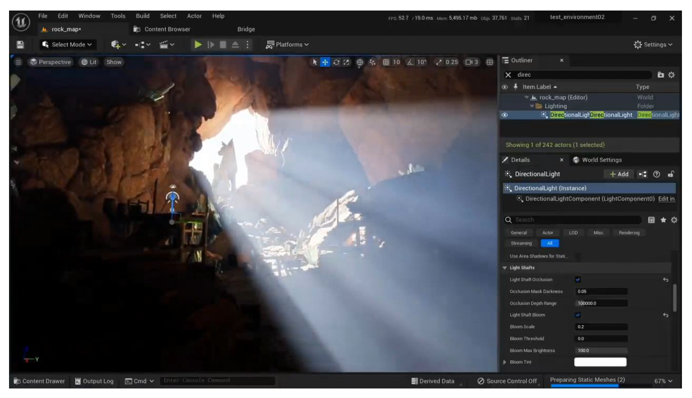
-
规则系统(rule system)：编辑环境时需遵循各种现实规则
例子
道路系统相关的一些规则：
- 道路上没有树和装饰物
- 道路应和地形匹配
- 石头通常位于道路两侧
- ...


- 规则系统需应对数据变化
- 与环境系统解耦合
Editor Plugin Architecture
商业软件的插件模块

下图是一个关于系统和对象之间的交叉矩阵。实际上任何系统和对象类型都可作为编辑器的插件。

下面列举一些常见的多插件组织形式：
-
覆盖式(covered)
- 仅执行新注册的逻辑，跳过原来的逻辑
- 例子：地形编辑覆写
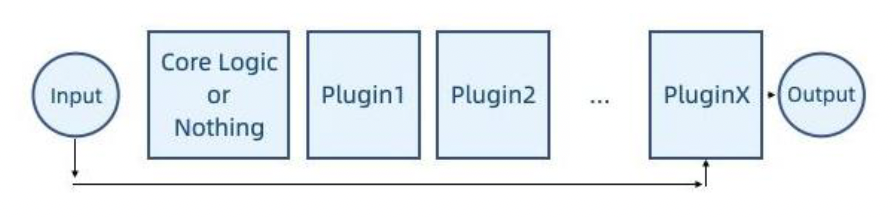
-
分布式(distributed)
- 每个插件都会被执行，如果有输出，那么将合并最终结果
- 例子：大多数单独编辑的特殊系统

-
流水线(pipeline)
- 输入和输出相互连接，一般输入和输出是相同的数据类型
- 例子：资产预处理、物理几何

-
洋葱圈(onion ring)
- 基于流水线，但系统的核心逻辑位于中间，插件同时关注进出逻辑
- 例子：带有地形插件的道路编辑插件

这些形式在游戏引擎中都有可能被用到，所以不要一上来就假设按照哪个方式走。
最后还得考虑版本控制(version control)问题：插件与主应用程序（游戏引擎）之间需要有特定的版本关系，以确保它们能够正常协同工作。可采取以下两种方式之一：
- 插件使用与主应用程序相同的版本号
- 【推荐】插件使用插件接口的版本号（因为插件接口和软件的更新频率可能不同）
Designing Narrative Tools
游戏中的叙事(storytelling)需控制时间轴上多个参数的变化。

在 UE 中，这一任务由一个叫做序列器(sequencer)的工具完成。它的组件有：
- 轨道(track)：用于引用序列中的参与者；任何角色、道具、相机、效果或其他参与者都可以在序列器中被引用和操作
- 属性轨道(property track)：轨道中引用参与者的属性
- 时间线(timeline)：描述离散帧中的时间的线
- 关键帧(key frame)：可用于操控属性；当达到时间线上的关键帧时，轨道的属性会更新为在该点定义的值
- 序列(sequence)：序列器的数据

下面通过一个例子展示序列器的基本操作：
-
将对象绑定到轨道上（使得序列器能控制小鸡）
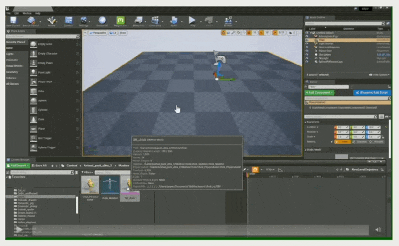
-
将对象属性绑定到属性轨道上（控制小鸡的移动位置）
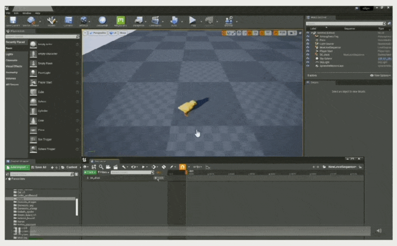
-
设置关键帧
-
单个（使小鸡到达指定位置）

-
多个（使小鸡按 A -> B -> C -> D 的顺序行进）

-
-
沿着关键帧插值属性（类似做动画）
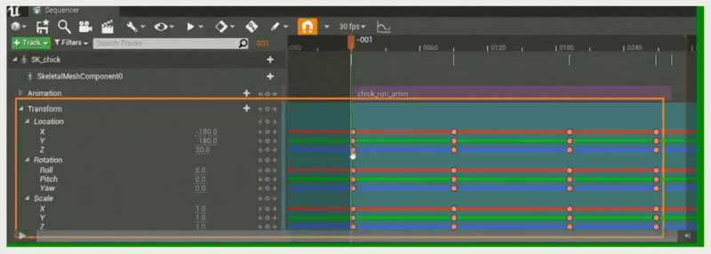
Reflection and Gameplay
反射(reflection)机制是游戏引擎中的一个重要功能。它也是序列器的实现基础，比如将数据绑定到轨道的操作就是基于反射系统实现的。

再来看游戏玩法。一款成熟游戏的游戏玩法是相当复杂的。在游戏引擎中一般是通过视觉脚本系统(visual scripting system)来编写游戏玩法的，比如 UE 的蓝图功能。
例子

视觉脚本系统的一个局限是可扩展性差。试想一下，假如原本角色只有「跳」这一个动作，但现在又新增一个「停止跳跃」的动作，那么工具层就得包含调用这一新动作的代码。而且也许未来还会引入更多的动作，到时候代码结构就会愈加复杂，难以管理。
class Human: public Object {
void Jump() {
// do something ...
}
void StopJump() {
// do something ...
}
}
void CallFunction(Object* instance, string type_name, string func_name) {
if(type_name == "Human") {
Human* human = (Human*) instance;
if(func_name == "Jump") {
human->Jump();
} else if(func_name == "StopJump") {
human->StopJump();
}
}
}
常用的解决方案还是采用反射机制。实际在 CS 领域中，反射是指一个进程检查、内省和修改自身结构和行为的能力。
Java 自带的反射
package Demo;
public class Test {
public int m_filed;
public void print() {
System.out.print("call print().");
};
}
package Demo;
import java.lang.reflect.Field;
import java.lang.reflect.Method;
public class Demo {
public static void main(String[] args) throws Exception {
Class<?> cls = Class.forName("Demo.Test");
Object obj = cls.getConstructor().newInstance();
Field filed_accessor = cls.getField("m_filed");
filed_accessor.set(obj, 2);
Method method_accessor = cls.getMethod("print");
method_accessor.invoke(obj);
}
}
对于上面的例子，通过反射建立起代码和工具层之间的桥梁，生成有关代码的元信息映射(meta information map)。具体来说是通过 class_name, func_name 和 para_name 来生成访问器(accessor)和调用器(invoker)。
void CallFunction(Object* instance, string type_name, string func_name) {
FunctionPtr function_ptr = FunctionInfoMap::getInvokeFunction(instance, type_name, func_name);
function_ptr->invoke();
}
Implementing Reflection in C++
C++ 中实现反射的做法：
-
从代码中收集类型信息
-
下图展示了通用编程语言（GPL）的编译过程

-
我们关注其中的中间产物 AST（抽象语法树(abstract syntax tree)），它以树的形式表示编程语言的语法结构，树中的每个节点代表源代码中的一个构造
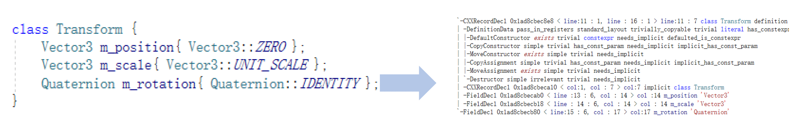
-
GAMES104 的 Piccolo 引擎之所以采用 Clang，是因为 Clang 的主要目标之一是提供基于库的架构，以便编译器能够与其他与源代码交互的工具进行互操作
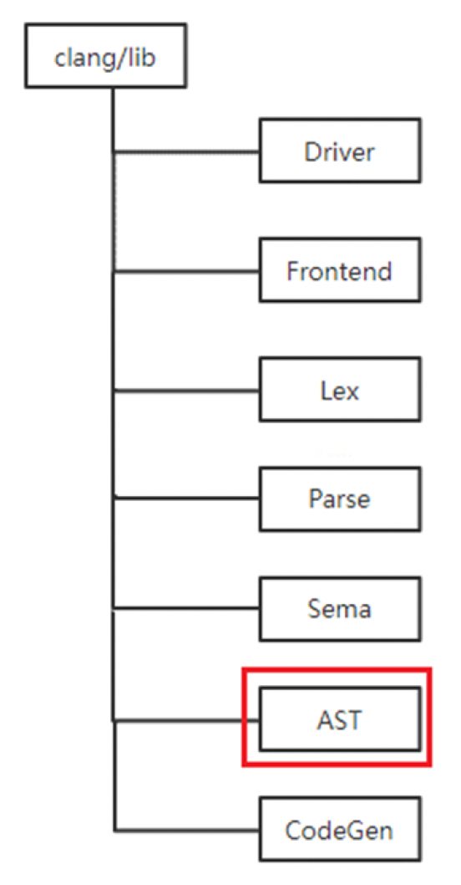
-
从 AST 中得到模式(schema)
- 从 AST 中解析得到类型名、字段名、字段类型等等
- 在内存中构建临时的数据模式

-
为实现对反射范围的精确控制，在实际中，我们需要用大量的标签(tag)信息来识别类型的意图
CLASS(Transform, Fields) { public: Vector3 m_position { Vector3::ZERO }; Vector3 m_scale { Vector3::UNIT_SCALE }; Quaternion m_rotation { Quaternion::IDENTITY }; }CLASS(CameraComponent : public Component, WhiteListFields) { public: CameraComponent() = default; META(Enable) CameraComponentRes m_camera_res; CameraMode m_camera_mode {CameraMode::invalid}; Vector3 m_foward {Vector3::NEGATIVE_UNIT_Y}; Vector3 m_up {Vector3::UNIT_Z}; Vector3 m_left {Vector3::UNIT_X}; };- 第一段代码中的
Fields表示允许所有字段被反射出来 - 第二段代码中的
WhiteListFields表示只有用META(Enable)描述的字段才能被反射出来
- 第一段代码中的
-
具体来说，反射控制是通过宏(macros)
__attribute__来实现的__attribute__是由 Clang 提供的源代码注解，在代码中可以使用这些宏来捕获所需的数据类型- 下面定义一个名为
CLASS的宏来区别预编译和编译- 预编译时，在
meta_parser中定义_REFOECTION_PARSER_宏以使属性信息生效
- 预编译时，在
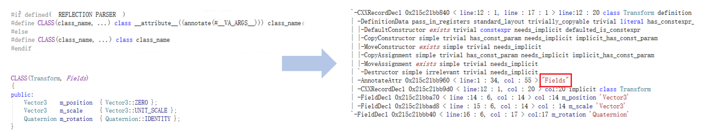
-
-
生成提供字段和方法的访问器的代码：利用模式生成
- 类：生成类型信息 getters
- 字段：生成访问字段的 getters 和 setters
- 函数：生成调用函数的调用者(invokers)
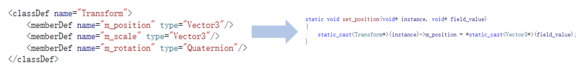
-
使用 <字符串，访问器> 映射来管理所有的访问器
Code Rendering
一个游戏引擎中需要反射的类会有几十个，如果还要手动写 getters, setters，那将是一件十分繁琐的事，并且不够自动化。为此引入了代码渲染(code rendering)机制。它是收集数据（如有）和加载相关模板（或直接发送输出）的过程。然后将收集到的数据应用于相关模板中，最终将输出发送给用户。这样做的好处是实现代码和数据的分离。
Web 端中成熟的代码渲染机制
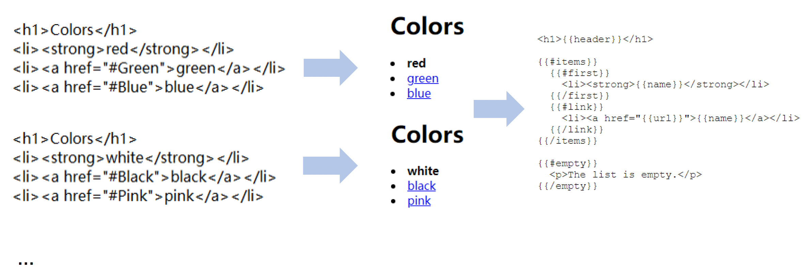
Web 端中一个流行的模板系统便是 Mustache。之所以如此命名，是因为它大量使用了大括号 {{ }}，看起来像两侧的胡须。

Piccolo 游戏引擎便借助 Mustache 渲染生成代码。

Collaborative Editing
开发大型项目会遇到的瓶颈
- 大量人围着大量数据工作
- 资产版本管理相当困难
其中合并冲突(merging conflicts)是最大的问题。如果不加处理，每个人在更新或上传资产时需要在合并冲突上花费很多时间。
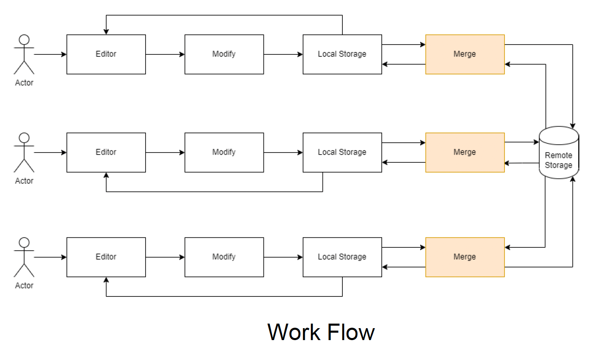
减少冲突的方法有：
- 将资产划分为更小的部分，以减少冲突发生的可能
- 所有人在相同场景下工作，以完全消除冲突
Splitting Assets
划分资产的几种方式：
-
将世界分层(layering)，每一层存储在一个资产文件中，不同人处理不同层级

-
优点：
- 适当的分层能减少编辑冲突
- 基于分层的逻辑可行
-
缺点：
- 分层逻辑可能依赖于其他层
- 在世界非常复杂时，很难合理地划分层次
-
-
划分世界：将世界划分为固定大小的块，每个块保存在单独的资产文件中；不同人在不同块上工作
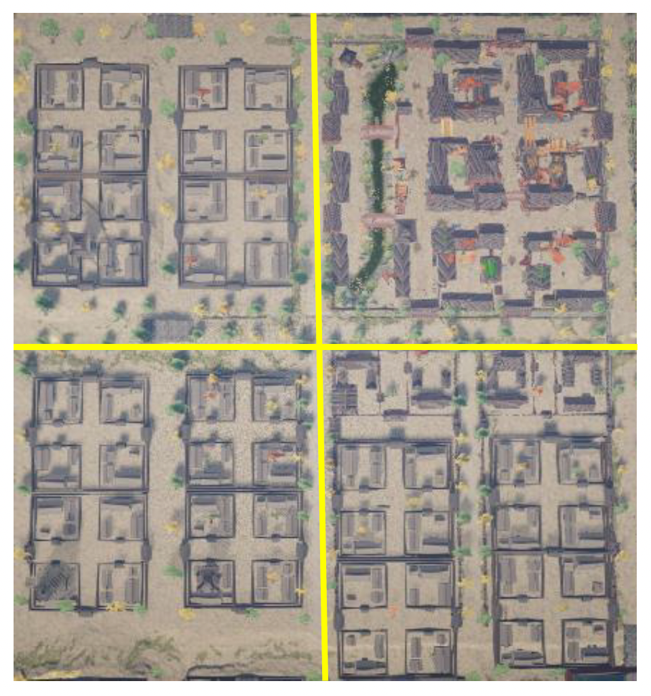
-
优点：
- 基于位置的划分有利于动态扩张世界
- 空间划分更加直观
-
缺点：难以处理横跨多个块的对象
-
-
每个参与者一个文件(one file per actor, OFPA)（UE5 提出）
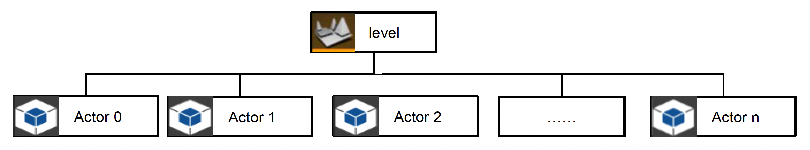
- 通过在外部文件中保存参与者实例的数据，减少开发者工作之间的重叠，因此修改参与者时无需保存主关卡文件
- 所有参与者在编译时都嵌入到各自的关卡文件中
-
优点：
- 细粒度的场景划分，更少的编辑冲突
- 仅需保存被修改的对象
-
缺点：
- 需管理大量文件，为版本控制带来更大负担
- 在将多个 OFPA 文件嵌入到关卡文件时，烘培速度会变慢
Coordinating Editing in One Scene
第二类解决冲突的方法是协同编辑，即连接多个世界编辑器实例，以在共享编辑会话(sessions)中协作，与团队成员实时共同搭建虚拟世界。
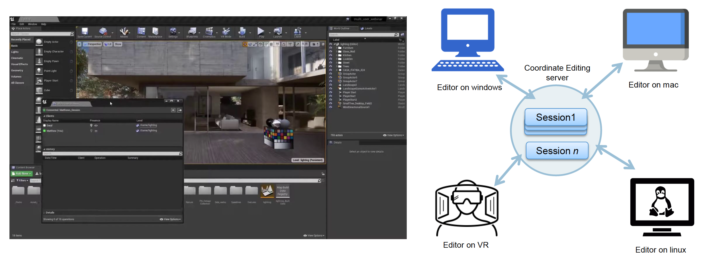
借助命令系统，从而将自己的操作和其他成员进行同步。
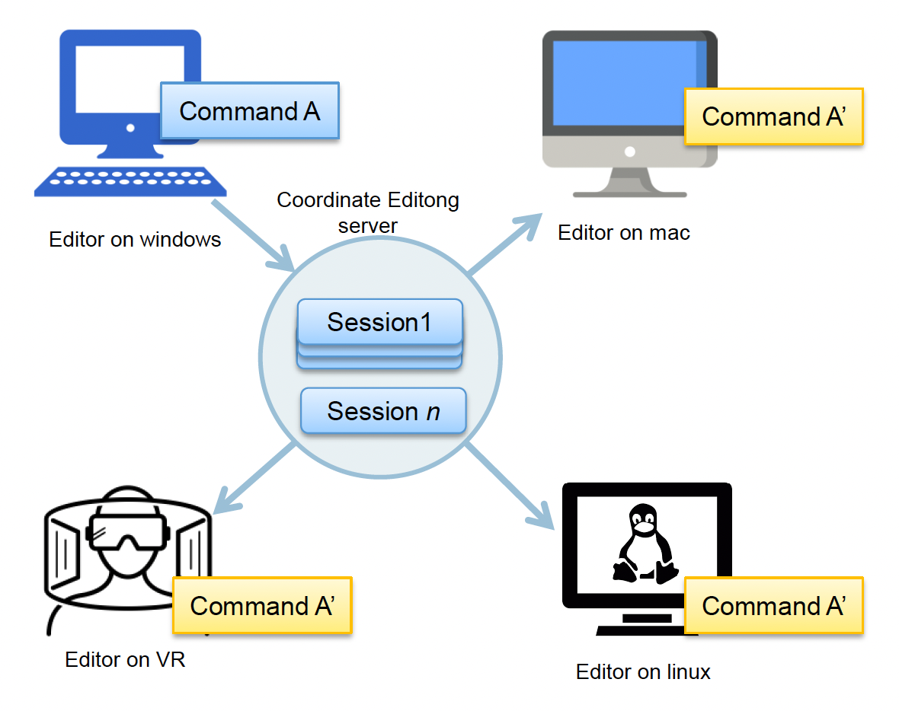
- 序列化命令，并将其发送给服务器
- 接收来自服务器的命令，并将其反序列化
- 调用命令
但实际上协同编辑的实现是很有挑战的，比如如何确保撤销/重做、合并等操作的一致性。其中一个简单做法是上锁，确保多位用户无法同时对相同实例或资产进行编辑。
-
实例锁

-
资产锁

但锁无法处理更复杂的情况。比如有三个人在同一场景下工作，某人的撤销或重做操作可能会破坏其他成员的当前操作。
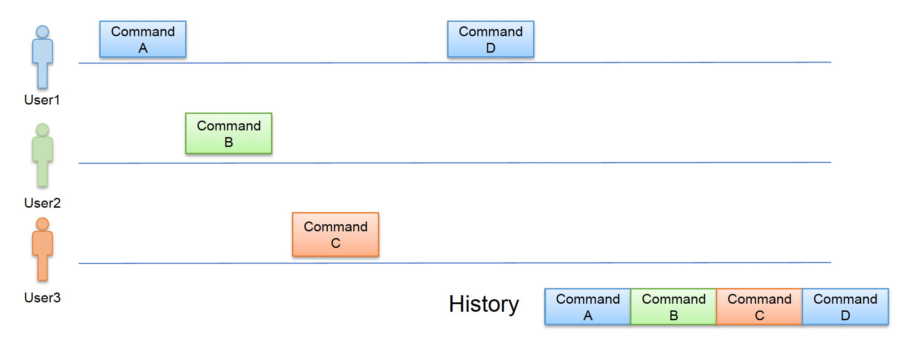
要想彻底解决上述问题，可采取以下方法之一：
- 操作变换(operation transform, OT)：将操作抽象为一个由可枚举的 N 种原子操作类型组成的操作序列
- 无冲突复制数据类型(conflict-free replicated data type, CRDT)：一种在网络中跨多个计算机复制的数据结构，具有以下特征：
- 应用程序可以独立、同时更新任何副本，无需与其他副本协调
- 一个算法（本身是数据类型的一部分）自动解决可能出现的任何不一致
- 尽管副本在任何特定时间点可能处于不同的状态，但它们最终会收敛
另外不难发现，服务器(server)在其中扮演着很重要的角色。它需做到：
- 保留每个会话，直到创建该会话的用户明确删除它或服务器关闭
- 将会话记录保存到磁盘中
传统工作流 vs 协作工作流

评论区